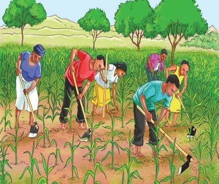
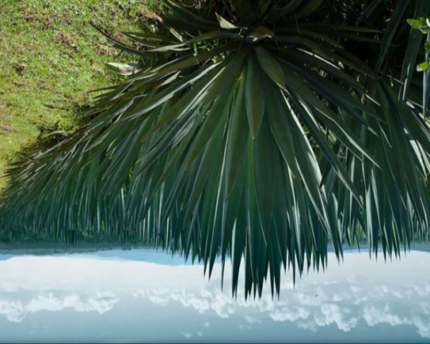
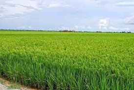
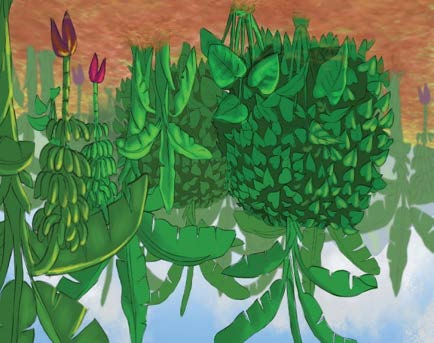

1. Maize

2. Sisal

3. Rice farm

4. Bananas farm
Questions
1. What crops do you see in pictures 1, 2, 3 and 4?
2. Explain the uses of the crops in the following table.




1. What crops do you see in pictures 1, 2, 3 and 4?
2. Explain the uses of the crops in the following table.